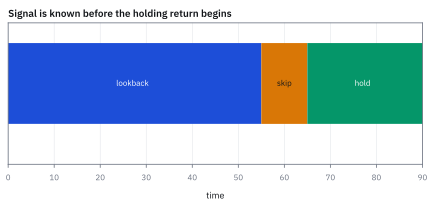
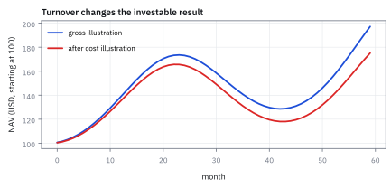
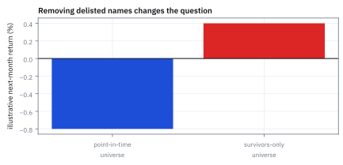
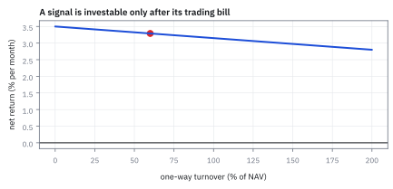

15.6 Momentum and Trend-Following: a Worked Strategy
กำหนดสัญญาณและรายชื่อหุ้นก่อนเห็นเส้นกำไร
ซื้อหุ้นผู้ชนะ 3 เดือน short ผู้แพ้ ข้างละ 1 ล้าน USD ผู้ชนะได้ 2.0% ผู้แพ้ −1.5% turnover 60% ต้นทุน 0.35% กำไรสุทธิเท่าไร และถ้าลองกฎมา 20 แบบ ผลนี้น่าเชื่อแค่ไหน?
เฉลย: gross 3.5% หักต้นทุน 0.21% เหลือ 3.29% หรือ 32,900 USD กลยุทธ์ไร้ฝีมือชนะ 9 ใน 10 ปีได้ 1.07% ต่อแบบ ลอง 20 แบบมีโอกาส 19.4% ที่จะเจอผู้ชนะหลอกอย่างน้อยหนึ่งแบบ
ศัพท์ที่ใช้ในหัวข้อนี้
- momentum
- tendency เชิงประจักษ์ที่ assets ซึ่งมี relative performance แข็งใน lookback ที่กำหนดอาจยังแข็งต่อช่วงหนึ่ง ใช้สร้าง ranked cross-sectional signal แต่ไม่รับรอง persistence
- trend-following
- rule ที่ถือ position ตามทิศทางของ own past return หรือ price trend ใช้สร้าง time-series directional exposure
- lookback window
- ช่วงอดีตที่ใช้คำนวณ signal ใช้กำหนดข้อมูลที่ order ณ วันนี้เห็นได้
- rebalance
- การปรับ weights กลับสู่ portfolio rule ในเวลาที่ระบุ ใช้แปลง signal เป็น trades และ turnover
- survivorship bias
- bias จาก universe ที่เหลือเฉพาะ assets รอดมาถึงวันนี้ ใช้เตือนว่าผลตอบแทนของ delisted names ต้องรวมอยู่ใน historical test
- turnover
- มูลค่าหรือสัดส่วน portfolio ที่เปลี่ยนในการ rebalance ใช้ประมาณ transaction costs และ capacity
- Net Asset Value (NAV)
- มูลค่าสินทรัพย์สุทธิหลังหนี้สินของ portfolio ใช้เป็นฐานหารกำไรขาดทุน, position weights และค่าใช้จ่ายให้เทียบกันได้
- cross-sectional momentum
- การจัดอันดับหลายสินทรัพย์ในเวลาเดียวกันแล้วซื้อผู้ชนะและขายผู้แพ้ ใช้สร้าง relative long-short portfolio
- delisting return
- ผลตอบแทนสุดท้ายเมื่อหลักทรัพย์ออกจากตลาดรวมเงินสดหรือความสูญเสียปลายทาง ใช้ปิดเส้นทาง wealth ของชื่อที่ไม่รอดอย่างซื่อสัตย์
- drawdown
- การลดลงของ portfolio จาก running peak ก่อนหน้า ใช้กำหนด risk limit และตรวจว่า momentum crash อยู่ในงบความเสียหายหรือไม่
- data snooping
- การค้นหา model หรือ parameter ซ้ำๆ บนข้อมูลชุดเดิมจนเจอผลลัพธ์ที่ดูดีเลิศโดยบังเอิญ ใช้เตือนว่าผล backtest มักหลอกตา
- multiple testing
- การทดสอบสมมติฐานหลายชุดพร้อมกัน ซึ่งทำให้ความน่าจะเป็นที่พบสัญญาณหลอก (false discovery) พุ่งสูงขึ้น
- Up Minus Down (UMD)
- Up Minus Down หรือ momentum factor ใน asset pricing model ใช้แยกแยะผลตอบแทนจากการเกาะแนวโน้มราคาออกจากความสามารถในการเลือกหุ้น
สัญลักษณ์ที่ใช้ในหัวข้อนี้
| สัญลักษณ์ | ความหมาย | หน่วย |
|---|---|---|
| $r_{i,t}$ | ผลตอบแทนของหุ้น $i$ | decimal return ต่อเดือน |
| $L$ | ความยาว lookback | เดือน |
| $s_{i,t}$ | ค่า momentum signal | decimal cumulative return |
| $W_t,L_t$ | กลุ่ม winners และ losers ที่ freeze ณ เวลา $t$ | รายชื่อหุ้น |
| $N_W,N_L$ | จำนวนหุ้นในกลุ่ม winners และกลุ่ม losers | หุ้น |
| $w_{i,t}$ | น้ำหนัก portfolio หลัง rebalance | fraction of NAV |
| $\tau_t$ | one-way turnover ของพอร์ต | fraction of NAV ต่อ rebalance |
| $q$ | ต้นทุนต่อหนึ่งหน่วย turnover | decimal cost |
| $c_t$ | ต้นทุนซื้อขายรวม | decimal return ต่อ rebalance |
| $r^{LS}_{t}$ | ผลตอบแทน long-short หลัง costs | decimal return ต่อเดือน |
| $\mathrm{NAV}_t$ | มูลค่าสินทรัพย์สุทธิของ portfolio | USD |
| $M$ | จำนวนแบบจำลองหรือ parameter ที่ทดสอบพร้อมกัน | จำนวนเต็มบวก |
| $\mathbb P(V)$ | ความน่าจะเป็นที่กลยุทธ์ที่ดีที่สุดจะชนะเลิศโดยบังเอิญ | probability fraction |
เริ่มจากคำถามที่ทดสอบได้: ผู้ชนะในอดีตยังชนะต่อหรือไม่
สมมติเรามีผลตอบแทนหุ้น 100 ตัวในช่วงที่ผ่านมา จัดอันดับแล้วซื้อกลุ่มบน ขายกลุ่มล่าง จากนั้นรอดูผลช่วงถัดไป วิธีนี้เรียกว่า cross-sectional momentum
การเห็นว่าหุ้นหนึ่งขึ้นมาแล้วไม่ได้พิสูจน์ว่าจะขึ้นต่อ เราต้องกำหนดวิธีจัดอันดับ เวลาซื้อขาย และต้นทุนไว้ก่อน แล้วทดสอบกับข้อมูลที่ยังไม่ได้ใช้เลือกกฎ หัวข้อนี้จะสร้างกฎตัวอย่างทีละขั้นเพื่อให้ตรวจได้ว่าใช้ข้อมูลอนาคตโดยเผลอหรือไม่ และกำไรเหลือเท่าไรหลังต้นทุน
กำเนิดของ momentum: จากข้อถกเถียงเรื่อง random walk สู่ความผิดปกติอันดับหนึ่ง
ก่อนที่คำว่า momentum จะกลายเป็นเสาหลักของวงการ quant ในยุค 1960 ถึง 1980 ทฤษฎีการเงินกระแสหลักเชื่อมั่นใน Efficient Market Hypothesis และมองว่าราคาหุ้นเคลื่อนที่แบบ random walk ที่ไม่มีความจำ อดีตไม่สามารถทำนายอนาคตได้ นักวิชาการมองการดูกราฟหรือ relative strength ว่าเป็นเพียงความเชื่องมงาย ขณะที่ผู้จัดการกองทุนสาย growth ในตลาดจริงอย่าง Richard Driehaus กลับใช้วิธีซื้อหุ้นที่วิ่งขึ้นแรงแล้วขายต่อที่ราคาสูงกว่า
จุดเปลี่ยนสำคัญเกิดขึ้นในปี 1993 เมื่อ Narasimhan Jegadeesh และ Sheridan Titman ตีพิมพ์งานวิจัยที่ทดสอบหุ้นในตลาดสหรัฐฯ ย้อนหลังตั้งแต่ปี 1965 ถึง 1989 พวกเขาจัดอันดับหุ้นตามผลตอบแทน 3 ถึง 12 เดือนที่ผ่านมา แล้วพบว่ากลุ่มผู้ชนะยังคงทำผลตอบแทนเฉลี่ยชนะกลุ่มผู้แพ้อย่างต่อเนื่องราว 1% ต่อเดือน เป็นเวลาอีกหลายเดือนถัดไป ผลตอบแทนนี้ไม่สามารถอธิบายได้ด้วย Capital Asset Pricing Model (CAPM) beta นับเป็นหลักฐานทางสถิติชิ้นแรกที่ท้าทายสมมติฐานตลาดมีประสิทธิภาพอย่างรุนแรง
ความผิดปกตินี้ทรงพลังมากจน Eugene Fama และ Kenneth French ยอมรับในปี 1996 ว่า momentum คือ premier anomaly ที่แบบจำลอง Fama-French สามปัจจัยอธิบายไม่ได้ จนกระทั่ง Mark Carhart ได้นำปัจจัย Up Minus Down (UMD) มาเพิ่มในปี 1997 เพื่ออธิบายกองทุนรวม ทฤษฎี behavioral finance อธิบายว่า ปรากฏการณ์นี้เกิดจากนักลงทุนมี underreaction ต่อข้อมูลข่าวสารใหม่ในระยะแรก แล้วตามด้วย overreaction เมื่อแห่ซื้อตามกัน
ทว่า momentum มีจุดตายที่ร้ายแรงคือ momentum crash ดังที่ Daniel และ Moskowitz พบว่า ในช่วงที่ตลาดฟื้นตัวอย่างรุนแรงหลังวิกฤตเศรษฐกิจ หุ้นกลุ่มผู้แพ้ในอดีตมักดีดตัวกลับขึ้นมามากกว่า 100% ส่งผลให้ขา short ขาดทุนมหาศาล กลยุทธ์นี้จึงไม่ใช่ free lunch แต่เป็นผลตอบแทนที่แลกมาด้วยความเสี่ยงแบบ tail risk
Worked Example — โจทย์และสิ่งที่ให้มา
โจทย์ให้อะไรมาบ้าง: ตัวอย่างนี้เป็น transparent cross-sectional rule ไม่ใช่ empirical claim: ใช้ point-in-time common-stock universe ของสหรัฐฯ, รวม delisting return และ cash proceeds แล้วแบ่งกลุ่มด้วยข้อมูลที่มีจริงก่อน rebalance วินัยนี้ป้องกัน survivorship bias และ data snooping
ขั้นที่ 1 — นิยามของสัญญาณที่เลือกใช้ และเหตุผลของการเว้นเดือน
สัญญาณ momentum ที่แท้จริงต้องสร้างขึ้นจากระดับราคาในอดีต ไม่ใช่สูตรที่คิดขึ้นมาลอยๆ การคูณผลตอบแทนแต่ละเดือนเข้าด้วยกัน สะท้อนการเติบโตแบบทบต้นของเงินทุนจริง ซึ่งสอดคล้องกับการคูณไขว้ของระดับราคาที่หักล้างกันจนเหลือเฉพาะหัวและท้าย
การเว้นเดือนล่าสุด $t-1$ เป็นการตัดสินใจเชิงโครงสร้างเพื่อตัด short-term reversal ที่ Jegadeesh ค้นพบออกไป หากไม่เว้นเดือนนี้ กลยุทธ์จะเผลอซื้อหุ้นที่เพิ่งดีดตัวจาก bid ไป ask และขายหุ้นที่เพิ่งร่วงแตะ bid ทำให้เสียต้นทุนกระจายตัวโดยไม่จำเป็น
ราคาหุ้นในแต่ละเดือนเชื่อมโยงกับผลตอบแทนรายเดือนผ่านอัตราส่วนราคา เมื่อนำผลตอบแทนรวมหนึ่งมาคูณต่อกัน ราคาเดือนระหว่างทางจะตัดกันเป็นทอดแบบ telescoping product เหลือเพียงอัตราส่วนของราคาสิ้นสุดต่อราคาเริ่มต้น
ผลตอบแทนสะสม $s_{i,t}$ จึงคือส่วนต่างของราคาเทียบกับฐานเดิม การใช้ผลคูณแทนผลบวกเป็นหัวใจสำคัญ เพราะเงินเดือนถัดไปเติบโตจากฐานใหม่ หากประมาณด้วย Taylor series ของ function $\ln(1+x)\approx x$ ผลรวมผลตอบแทนจะคลาดเคลื่อนทันทีเมื่อความผันผวนสูง
เราจงใจเว้นเดือน $t-1$ ล่าสุดไว้ เพื่อหลีกเลี่ยงผลกระทบของ short-term reversal จาก bid-ask bounce และการกระจายตัวของสภาพคล่อง เมื่อแทนผลตอบแทนสามเดือนของ AAPL จะได้สัญญาณสะสม 7.016%
ขั้นที่ 2 — นิยามของผลตอบแทนกลยุทธ์ พร้อมต้นทุนในบรรทัดเดียวกัน
ผลตอบแทนของกลยุทธ์ไม่ได้เป็นตัวเลขเดี่ยว แต่เป็นผลต่างระหว่างค่าเฉลี่ยสองกลุ่ม การกำหนดน้ำหนักให้เท่ากันภายในแต่ละข้างทำให้กลยุทธ์ไม่มี bias ไปยังหุ้นตัวใดตัวหนึ่งเป็นพิเศษ
การระบุต้นทุน $c_t$ ลงในสมการนิยามตั้งแต่แรก คือวินัยสำคัญของ quant เพราะหากรายงานเฉพาะผลตอบแทนขั้นต้น กลยุทธ์ momentum จะดูดีเกินจริงเสมอ เนื่องจากความถี่ในการซื้อขายที่สูงจะกัดกินผลกำไรไปอย่างรวดเร็ว
น้ำหนักการลงทุนถูกกำหนดให้กระจายเท่ากันภายในแต่ละกลุ่ม โดยขาซื้อมีสัดส่วนรวมบวกหนึ่ง และขาขายยืมมีสัดส่วนรวมลบหนึ่ง ผลรวมผลตอบแทนขั้นต้นจึงแยกออกเป็นค่าเฉลี่ยของกลุ่มผู้ชนะลบด้วยค่าเฉลี่ยของกลุ่มผู้แพ้อย่างหมดจด
ผลตอบแทนสุทธิเกิดจากการนำผลตอบแทนขั้นต้นมาหักต้นทุนธุรกรรม $c_t$ ทันทีในสมการเดียวกัน เพื่อป้องกันภาพลวงตาจากการประเมินผลเกินจริง
พอร์ตนี้เป็น zero-cost portfolio เพราะเงินสุทธิที่ลงทุนเป็นศูนย์ โดยมี gross exposure เท่ากับสองหน่วยของ NAV คือกู้ยืมหลักทรัพย์มาขายเพื่อนำเงินสดไปซื้อกลุ่มผู้ชนะ
ขั้นที่ 3 — turnover cost ledger
ทำไมต้องหารสอง เป็นคำถามที่พบบ่อยที่สุด เมื่อเราขายหุ้น A ออกไป 50% แล้วซื้อหุ้น B เข้ามา 50% ผลรวมของการเปลี่ยนแปลงค่าสัมบูรณ์คือ 100% แต่มูลค่าสินทรัพย์ที่หมุนเวียนจริงคือ 50% ของพอร์ต
การคิดต้นทุน $c_t$ จาก one-way turnover คูณกับอัตราต้นทุนต่อรอบ $q$ จึงสะท้อนค่าธรรมเนียม, spread และ market impact ของการจัดสรรเงินใหม่ได้อย่างถูกต้อง
เมื่อเงินลงทุนรวมถูกล็อกไว้ ผลรวมของการเปลี่ยนแปลงน้ำหนักทั้งพอร์ตต้องเป็นศูนย์เสมอ ปริมาณการซื้อสุทธิจึงต้องเท่ากับปริมาณการขายสุทธิพอดี
ผลรวมค่าสัมบูรณ์ของน้ำหนักที่เปลี่ยนจึงนับทั้งขาซื้อและขาขาย ทำให้ได้ปริมาณการซื้อขายรวมสองเท่า ตัวคูณหนึ่งส่วนสองจึงทำหน้าที่เปลี่ยน two-way volume ให้กลายเป็น one-way turnover เพื่อคิดต้นทุนอย่างตรงไปตรงมา
ในทางปฏิบัติ น้ำหนักก่อนปรับพอร์ต $w_{i,t-1}^+$ จะเคลื่อนที่ตามการเปลี่ยนแปลงของราคาหุ้นตลอดเดือนที่ผ่านมา หากไม่นำ price drift มาคิด turnover ที่คำนวณได้จะต่ำกว่าความเป็นจริง
ขั้นที่ 4 — ตัวอย่าง signal และ net return ที่กางได้
คะแนน momentum คือผลคูณของผลตอบแทนสามเดือนต่อกัน แล้วลบหนึ่งเพื่อให้เหลือเฉพาะส่วนที่โต ส่วนผลตอบแทนกลยุทธ์คือขาซื้อลบขาขายยืม แล้วหักต้นทุนการซื้อขาย
คูณทีละคู่: $1.05\times0.98=1.029$ (ขึ้น 5% แล้วลง 2% เหลือโต 2.9% ไม่ใช่ 3%) แล้ว $1.029\times1.04=1.07016$ ลบหนึ่งได้ 7.016% ทำไมคูณไม่บวก: เพราะเดือนที่สองโตจากฐานใหม่ (หัวข้อ 1.10)
ขาซื้อได้ 2.0% ขาขายยืมเสีย 1.5% ซึ่งกลายเป็นกำไรให้เรา รวมเป็น 3.5%
turnover 0.60 คูณกับต้นทุนต่อรอบ 0.0035 กินไป 0.21 percentage point เหลือสุทธิ 3.29% ต่อรอบ
ขั้นที่ 5 — แปลงผลตอบแทนเป็นเงินบน NAV
การแปลงผลตอบแทนเป็นหน่วยดอลลาร์ช่วยให้เห็นความคุ้มค่าของการดำเนินงาน ต้นทุน 2,100 ดอลลาร์ที่หายไปคือเงินสดจริงที่ต้องจ่ายให้โบรกเกอร์และตลาด ซึ่งเตือนให้ผู้จัดการกองทุนตระหนักถึง friction ก่อนขยายขนาดเงินทุน
แยกกำไรขั้นต้นออกจากต้นทุนการซื้อขายอย่างชัดเจน บนเงินทุนตั้งต้นหนึ่งล้านดอลลาร์ ขา long และ short ทำกำไรขั้นต้นร่วมกัน 35,000 ดอลลาร์ แต่ต้องจ่ายค่าซื้อขายไปจริง 2,100 ดอลลาร์
กำไรสุทธิ 32,900 ดอลลาร์จะถูกนำไปบวกเพิ่มเข้าสู่ NAV ปลายงวด กลายเป็นฐานทุนใหม่ 1,032,900 ดอลลาร์สำหรับการจัดสรรพอร์ตในรอบถัดไป
ขั้นที่ 6 — พิสูจน์ผลกระทบของ Data Snooping และการทดสอบหลายสมมติฐาน
ตัวเลขในตัวอย่างนี้ยกมาจากงานวิเคราะห์ statistical biases ในการประเมินผลการดำเนินงาน เมื่อเราเห็นกลยุทธ์ชนะ 9 ใน 10 ปี เรามักด่วนสรุปว่ากลยุทธ์นี้ใช้งานได้จริง
ทว่าในโลกความเป็นจริง นักวิจัยมักปรับจูน parameter ซ้ำแล้วซ้ำเล่า การค้นหาผ่าน 20 หรือ 100 ตัวเลือกทำให้โอกาสพบผู้ชนะจอมปลอมสูงเกินกว่าจะยอมรับได้ หากไม่ปรับเกณฑ์การทดสอบด้วยวิธีอย่าง Bonferroni
สมมติฐานหลักคือกลยุทธ์ไม่มี edge ใดๆ โดยโอกาสชนะตลาดในแต่ละปีเปรียบเสมือนการโยนเหรียญยุติธรรมที่มีความน่าจะเป็นเท่ากับหนึ่งส่วนสอง ผลการชนะ 9 ใน 10 ปีมีโอกาสเกิดขึ้นเพียง 1.07% ซึ่งดูเหมือนมีนัยสำคัญ
แต่เมื่อทีมวิจัยทดสอบกลยุทธ์หลายแบบพร้อมกัน เช่น เปลี่ยน lookback หรือ holding period จำนวน $M$ ครั้ง ความน่าจะเป็นที่กลยุทธ์ที่ดีที่สุดจะชนะ 9 ใน 10 ปีโดยบังเอิญจะคำนวณจากหนึ่งลบด้วยความน่าจะเป็นที่ล้มเหลวทั้งหมด
เพียงแค่ทดสอบ 20 รูปแบบ โอกาสเกิดสัญญาณหลอกจะพุ่งขึ้นเป็น 19.4% และหากทดสอบ 100 รูปแบบ โอกาสจะสูงถึง 66.0% ความสำเร็จใน backtest จึงอาจเป็นเพียงภาพลวงตาจาก data snooping
ขั้นที่ 7 — survivorship: ไล่ผู้แพ้ออกทุกปี แล้วดูว่าผู้รอดดูเก่งแค่ไหน
ผู้จัดการกองทุน 1,000 คน ไม่มีใครมีฝีมือ แต่ละปีชนะตลาดด้วยโอกาสครึ่งหนึ่ง ใครแพ้ถูกไล่ออก ฐานข้อมูลเก็บเฉพาะคนที่ยังทำงานอยู่
$n_t$ คือจำนวนผู้จัดการที่ยังอยู่หลัง $t$ ปี หลังห้าปีเหลือราว 31 คนที่ชนะทุกปี ถ้าดูแค่ฐานข้อมูลของคนที่ยังอยู่ อัตราชนะคือ 100% ทั้งที่ทุกคนไม่มีฝีมือเลย
survivorship bias คือความเอียงที่เกิดเมื่อวิเคราะห์แค่คนที่รอด โดยไม่นับคนที่หายไป backtest ที่ใช้รายชื่อหุ้นของวันนี้ย้อนไปในอดีต ก็ตัดหุ้นที่ล้มออกไปแบบเดียวกัน
บทเรียนรวมของการประเมินผลงาน ถ้าเลือกผู้จัดการหรือกลยุทธ์ก่อนดูผล ใช้โอกาส 1.07% ได้ ถ้าเลือกเพราะผลออกมาดีที่สุด ต้องใช้โอกาสของค่าสูงสุดในขั้นที่ 6 และถ้าข้อมูลเก็บแต่ผู้รอด ตัวเลขทุกตัวเอียงขึ้นก่อนเริ่มคำนวณ
จดหมายทายผลบอลสิบสัปดาห์ติด: ผู้รอดคนสุดท้ายของต้นไม้
สไลด์ของคอร์สเล่ากลโกงหนึ่ง คุณได้จดหมายทายผลฟุตบอลวันอาทิตย์ถูกติดกันสิบสัปดาห์ สัปดาห์ที่สิบเอ็ดขอเงิน 10,000 USD เพื่อแลกกับคำทายครั้งต่อไป คนส่งเก่งจริงไหม?
$n_k$ คือจำนวนคนที่ได้คำทายถูก $k$ สัปดาห์ติด สัปดาห์แรกคนส่งเขียนถึง 1,024 คน ครึ่งหนึ่งได้ทีม A อีกครึ่งได้ทีม B สัปดาห์ต่อไปเขียนถึงเฉพาะครึ่งที่ได้คำทายถูก และแบ่งครึ่งอีก สิบสัปดาห์ต่อมาเหลือหนึ่งคนที่เห็นคำทายถูกทุกครั้ง ทั้งที่คนส่งทายแบบโยนเหรียญ
ต้นทุนของกลโกงคือจดหมาย 2,046 ฉบับ แลกกับเงิน 10,000 USD จากคนเดียว คนที่ได้จดหมายเห็นแค่กิ่งที่รอดของต้นไม้ ไม่เห็นอีก 1,023 กิ่งที่ถูกทิ้ง ผลงานกองทุนที่โฆษณาว่าชนะตลาดสิบปีติดก็อ่านแบบเดียวกัน ถ้ามี 1,024 กองที่ไม่มีฝีมือเลย ก็ยังคาดว่าจะมีหนึ่งกองทำได้
ขั้นที่ 8 — Monty Hall: ข้อมูลจากคนที่รู้คำตอบเปลี่ยนความน่าจะเป็น
ประตูสามบาน หลังบานหนึ่งมีเงินรางวัล 1 ล้าน USD อีกสองบานว่าง เราเลือกประตูที่ 1 พิธีกรรู้ว่ารางวัลอยู่ไหน และจงใจเปิดประตูว่างอีกบานให้ดูเสมอ แล้วถามว่าจะเปลี่ยนไหม
ตอนเลือก ประตูที่ 1 มีโอกาส 1/3 อีกสองบานรวมกัน 2/3 พิธีกรไม่ได้เปิดประตูแบบสุ่ม เขาเปิดบานว่างเสมอ การเปิดนั้นจึงไม่เปลี่ยนโอกาสของประตูที่เราถือ แต่ย้าย 2/3 ทั้งก้อนไปอยู่ที่ประตูเดียวที่ยังปิด เปลี่ยนจึงชนะสองในสามครั้ง ถ้ามีร้อยบานและพิธีกรเปิดบานว่าง 98 บาน ความต่างยิ่งชัด
สัญชาตญาณพลาดเพราะไม่นับว่าข้อมูลมาจากคนที่รู้คำตอบและเลือกเปิด กองทุนที่มาเสนอขายก็เหมือนประตูที่พิธีกรเลือกเปิด มันถูกเลือกเพราะผลออกมาดี ต้องถามก่อนเสมอว่าใครเป็นคนเลือกว่าจะให้เราเห็นอะไร หัวข้อ 24.1 ขั้นที่ 6 ถึง 7 แยกกรณีพิธีกรเปิดแบบสุ่มให้ดูด้วย ซึ่งให้ครึ่งต่อครึ่ง
แล้วเอาไปใช้ทำอะไรได้จริงบ้าง
การประกอบกลยุทธ์จริงจากต้นจนจบ แสดงว่าทุกอย่างในเล่มนี้มารวมกันอย่างไร
ใช้เป็นแม่แบบของการสร้างกลยุทธ์ ตั้งแต่นิยามสัญญาณ เลือกหุ้น คำนวณผลตอบแทน จนถึงหักต้นทุน
ใช้เห็นด้วยตัวเลขว่าต้นทุนการซื้อขายกินกำไรไปเท่าไร ซึ่งมักเป็นส่วนใหญ่ของกำไรที่คำนวณไว้
ใช้เป็นจุดเริ่มต้นให้ปรับต่อ เช่นเปลี่ยนช่วงเวลาของสัญญาณ หรือเปลี่ยนวิธีคัดหุ้น
Figure 15.6a — signal formation timeline

timeline แสดง lookback, skip month และ holding month อย่างชัดเจน เพื่อไม่ให้ signal ใช้ return ที่ยังไม่รู้ตอน order ถูกส่ง
Figure 15.6b — cumulative book illustration

มูลค่าพอร์ตสังเคราะห์เปรียบเทียบ gross momentum book กับเส้นทางเดียวกันหลัง fixed cost drag ช่องว่างคือผลของ cost accounting ไม่ใช่คำกล่าวอ้างผลตอบแทนจริงของสหรัฐฯ
Figure 15.6c — survivorship ledger

สอง universes สังเคราะห์ต่างกันเพียงชุดหนึ่งรวม delisted loser และ terminal return การตัดชื่อนั้นออกทำให้ค่าเฉลี่ยดีขึ้นโดยกลไก ภาพนี้สอนทิศทาง bias ไม่ได้ประมาณขนาดจริง
Figure 15.6d — turnover เปลี่ยน gross signal เป็น net result

เส้นแสดง net return จาก gross 3.50% ต่อเดือนเมื่อ cost เท่ากับ 35 basis points ต่อหนึ่งหน่วย turnover ที่ turnover 60% เหลือ 3.29%; ยิ่ง rebalance มาก cost ยิ่งกิน signal แบบเส้นตรงในสมมติฐานนี้
ล็อกกติกาก่อนรัน แล้วแยกความเสี่ยงทีละก้อน
ก่อนรันต้องล็อกชนิดหลักทรัพย์ ตลาดซื้อขาย ราคาขั้นต่ำ วันที่ข้อมูลพื้นฐานพร้อมใช้ วิธีปรับ corporate action วิธีรับ delisting ช่วง lookback ช่วงที่เว้น อายุการถือ และเวลา rebalance ถ้าแก้รายการใดหลังเห็นผล เท่ากับเปลี่ยนโจทย์
Long-short ไม่ได้แปลว่าไร้ความเสี่ยง market beta, น้ำหนัก sector เอียง, short squeeze, borrow recall และ crash reversal ยังทำให้ขาดทุนพร้อมกันได้ จึงรายงาน gross exposure, net exposure, turnover, capacity และ drawdown แยกกัน อย่าให้เลขสุทธิตัวเดียวซ่อนก้อนเสี่ยงทั้งหมด
คำตอบ — momentum หนึ่งเดือน และโอกาสที่ผลดีเป็นแค่ความบังเอิญ
คำถาม: ซื้อหุ้นผู้ชนะ 3 เดือน short ผู้แพ้ ข้างละ 1 ล้าน USD ผู้ชนะได้ 2.0% ผู้แพ้ −1.5% turnover 60% ต้นทุน 0.35% กำไรสุทธิเท่าไร และถ้าลองกฎมา 20 แบบ ผลนี้น่าเชื่อแค่ไหน?
ของที่มี: ขั้นที่ 1 ถึง 8
1. สัญญาณของ AAPL จากสามเดือน 5%, −2%, 4% คือ 1.05 × 0.98 × 1.04 − 1 = 7.016% โดยเว้นเดือนล่าสุด
2. gross 2.0% − (−1.5%) = 3.5% ต้นทุน 60% × 0.35% = 0.21% สุทธิ 3.29% หรือ 32,900 USD NAV ใหม่ 1,032,900 USD
3. กลยุทธ์ไร้ฝีมือชนะ 9 ใน 10 ปีด้วยโอกาส 11/1024 = 1.07% ลอง 20 แบบ โอกาสเจอผู้ชนะหลอกคือ 1 − 0.98926²⁰ = 19.4% ลอง 100 แบบคือ 66.0%
4. ผู้จัดการไร้ฝีมือ 1,000 คนที่ถูกไล่ออกเมื่อแพ้ เหลือราว 31 คนหลังห้าปีที่มีสถิติชนะ 100%
ตรวจเองใน 10 วินาที: 2.0 + 1.5 = 3.5 ลบ 0.21 ได้ 3.29 และ 1 − 0.99²⁰ ≈ 18% ใกล้ 19.4%
แปลว่าอะไร: momentum คือกฎจัดอันดับที่ต้องล็อกเวลาและต้นทุนก่อนทดสอบ ถ้าหุ้นที่ถูก delist หายจากฐานข้อมูล หรือผลที่เห็นถูกเลือกมาจากหลายแบบ ตัวเลขที่สวยอาจเป็นแค่ผู้รอดที่โชคดี
โค้ดตรวจ signal, cost และเงินปลายงวด
import numpy as np
lookback=np.array([.05,-.02,.04])
signal=np.prod(1+lookback)-1
winner=np.array([.03,.01])
loser=np.array([-.01,-.02])
turnover=.60
cost_per_turn=.0035
gross=winner.mean()-loser.mean()
cost=turnover*cost_per_turn
net=gross-cost
nav=1_000_000
assert abs(signal-.07016)<1e-12
assert abs(gross-.035)<1e-12
assert abs(cost-.0021)<1e-12
assert abs(net-.0329)<1e-12
assert abs(nav*net-32_900)<1e-8
from math import comb
p9=(comb(10,9)+comb(10,10))/2**10
assert abs(p9-.01074)<1e-5
assert abs(1-(1-p9)**20-.1942)<1e-4 and abs(1-(1-p9)**100-.6604)<1e-4
assert 1000*.5**5 == 31.25
rng=np.random.default_rng(0) # Monty Hall by simulation
prize=rng.integers(0,3,100_000)
assert abs(np.mean(prize==0)-1/3)<.01 and abs(np.mean(prize!=0)-2/3)<.01 # pick door 0: stay vs switch
assert 2**10 == 1024 and 1024 // 2**10 == 1 and sum(2**k for k in range(1, 11)) == 2046 # letter scamโค้ดคำนวณแบบเดียวกับ formula และใช้ arrays แยก winner กับ loser เพื่อกันการสลับเครื่องหมายขา short; production ต้องดึง point-in-time membership และ terminal delisting records จาก data lineage ที่บันทึกได้
ก่อนไปต่อ — alpha decay และ crowding
แม้ backtest momentum ผ่าน holdout แล้ว live result ยังเปลี่ยนเมื่อ capital โต, turnover แพงขึ้น หรือหลายกองใช้ ranking เดียวกัน หัวข้อถัดไปจึงเปลี่ยนคำถามจาก signal มีหรือไม่ เป็น signal เหลือเท่าไรที่ scale ปัจจุบันและขายออกได้กี่วันใน stress
กับดัก: “top decile” โดยไม่มี data lineage
constituent list ของวันนี้, adjusted prices ที่แก้ย้อนหลังหลัง delisting และ proceeds ที่หายไปทำให้ historical universe สะอาดเกินจริง ต้องเก็บ point-in-time membership, corporate-action policy และแหล่ง delisting return ไว้ข้าง backtest ทุกครั้ง
ข้อจำกัด: วิธีนี้สมมติอะไร และของจริงเป็นอย่างไร
| เรื่อง | ตัวอย่างสมมติว่า | สิ่งที่ต้องตรวจเมื่อใช้ข้อมูลจริง |
|---|---|---|
| ต้นทุน | คงที่ต่อ turnover | spread และผลกระทบต่อราคาขึ้นกับขนาดคำสั่ง |
| การเข้าออก | ซื้อขายได้ที่ราคาที่ระบุ | ราคานั้นรู้เมื่อใด และส่งคำสั่งทันหรือไม่ |
| ความคงทน | ใช้กฎเดิมตลอดการทดสอบ | ผลในข้อมูลใหม่อาจต่างจากอดีต ต้องทดสอบแยก |
แต่ละแถวคือสมมติฐานที่ต้องตรวจ ผลจริงอาจดีกว่าหรือแย่กว่าผลทดสอบ จึงไม่ควรแปลง backtest เป็นคำรับรอง
สรุปที่ใช้ได้จริง
- momentum คือ ranking rule ที่ระบุเวลาครบ ไม่ใช่ป้ายเรียกกราฟ
- skip และ holding periods ป้องกัน look-ahead ที่เกิดโดยไม่ตั้งใจ
- net return ต้องมี turnover และ cost assumptions
- หุ้นสหรัฐฯ ที่ถูก delist ต้องอยู่ใน historical universe